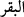

hâline onların! Ve kazandıklarından ötürü vay hâline onların!
(  ) “Veyl” kelimesi, felâkete uğrayan her kimsenin kendine azâbın değmesi üzerine
yaptığı bedduâdır. Yâni; “büyük azâbı hakettin” demektir. Peygamber Efendimiz (s.a.)
şöyle buyurmuştur: “Veyl, cehennemde öyle bir vâdîdir ki kâfirler onun dibine ancak
kırk senede varır.”[319]
Yine Saîd b. Müseyyeb (r.a.) buyurmuştur ki: “Veyl, cehennemde öyle bir vâdîdir ki,
eğer dünyâdan bir dağ oraya konacak olsaydı, sıcağın şiddetinden ânında erirdi.”
“(Muharref) kitâb (Tevrât)’ı elleriyle yazanlara...” Burada mecâzî ifâdeden
kaynaklanacak bir tevehhümü bertaraf etmek için “eller” kelimesi, te’kîd olarak
zikredilmiştir. Çünkü insan birisinin eliyle başka birine mektûb yazdığında “falana
mektûb yazdım” diyebilir. Burada Tevrât’ı bizâtihî onların tahrîf ettiği vurgulanıyor.
Hem daha sonra yahûdîler, halkın câhil olanlarına tahrîf ettikleri şeyin Tevrât’ta
bulunduğunu yâni Tevrât’ın Allah’dan olduğunu söylüyorlardı. Rivâyet olunmuştur ki:
Peygamber Efendimiz (s.a.), Medîne’yi teşrîf buyurduklarında Yahûdî bilginleri, gelir
kaynaklarının ve reisliklerinin elden gideceğinden korktular. Bu yüzden de diğer
yahûdîlerin îmâna gelmelerinden endişe ile Peygamber Efendimiz (s.a.)’in Tevrât’ta
bulunan; “güzel yüzlü, kıvırcık saçlı, elâ gözlü ve orta boylu” şeklindeki sıfatlarını
değiştirerek onun yerine, “düz saçlı, uzun boylu ve mavi gözlü” yazdılar. Oysa bu, esas
metnin tam tersiydi. Halk onlardan peygamberin sıfatları hakkında soru sorduklarında
bunları okudular. Halk da Peygamberimiz’in bu vasıflarda olmadığını görerek onu
yalanlamaya kalkıştı. Yahûdî ruhbanları, ortaya koydukları bu tahrîfi, sadece
karşılığında biraz para alabilmek için yapmışlardı. O rüşvet, geçimleri için gereken
miktardı. Burada Tevrât, satılan mal şeklinde ifâde edildi. Oysa mal, anlaşma ile, para
karşılığında alınan şeydir. Yâni bizâtihî satılan odur. Fakat burada Tevrât bizâtihî
satılmayıp sadece para kazanmaya vesîle olmaktaydı. Tabîî, vesîle aynen bir şeyin
“kendisi” gibidir. Böylece burada Yahûdî bilginlerinin Tevrât’ı vesîle kılarak para
kazanmaları ayıplanmaktadır.
Paranın “az” olarak vasıflandırılması Kurtubî’de de belirtildiği gibi geçici olması
veya sevâbının olmaması sebebiyledir. Veya haram olduğu içindir. Çünkü haram olan
bir şeyin, ne bereketi vardır, ne de Allah katında kârı!
Âyette onların Tevrât âyetlerini değiştirmelerinden dolayı azâba müstehak oldukları
gibi, buna karşılık olarak aldıkları rüşvet ve kazançtan dolayı da azâba dûçâr
olacaklarına işâret edilmiştir. Âyetteki kesb; yâni kazanmak, bir yarar sağlamak veya bir
zarardan kurtulmak için kullanıldığından Cenâb-ı Hak kesble nitelendirilmez.
Bu âyetin işârî anlamları şöyledir:
1. Kişinin ilim, yakîn ve ma’rifet sâhibi olup Allah ile mükâlemede bulunması,
Allah’ın lütuf ve rahmetiyle yardımı olmadığı sürece onun hakîkî îmâna sâhib olduğu
anlamına gelmez. “Allah’ın size lütuf ve rahmeti olmasaydı, hiçbiriniz asla temize
çıkamazdı.” (en-Nûr, 24/21) Cenâb-ı Hak İblîs’e de hitâb etmiş ve: “Ey İblîs
kudretimle yarattığıma secde etmekten seni alıkoyan nedir?” (Sâd, 38/75)